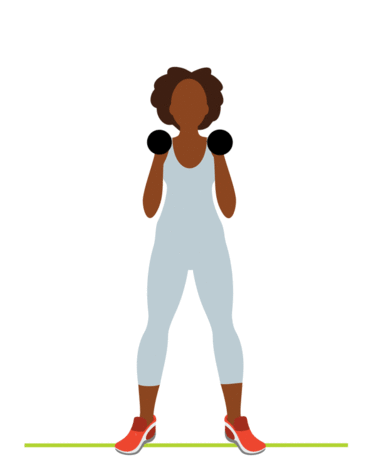
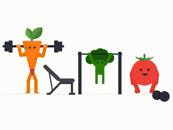

We recommend at least 150 minutes every week of moderate exercise, or 75 minutes every week of vigorous exercise. That can be broken down into 30 minutes of exercise, five days a week.
For an overweight beginner, that can seem like a lot. But it’s important that you see this recommendation as a goal to which you can work. If you’re physically unable to complete 30 minutes of exercise this week, do what you can, and build toward 30 minutes daily over time. In fact, three bouts of 10 minutes of exercise a day adds up to the same calorie expenditure as a continuous 30 minutes.
In the beginning, it doesn’t even matter if your exercise sessions are so short that they aren’t contributing significantly to calories burned. All that matters in the beginning is that you’re doing what you’re capable of doing. That’s how to begin preparing your body for longer workout sessions in the future.
You’ll still experience the benefits of fitness if you break those 30 minutes into two or three groups of 10 to 15 minutes throughout the course of the day. When you begin, don’t allow yourself to get hung up on the clock. Instead, focus on picking an activity that you enjoy and that can fit into your schedule at least three to five days a week.
To increase your chances of successfully sticking to your program, try to schedule it for the same time each day, such as in the morning or right after work. The idea is to repeat the behavior until it becomes a habit.
Body mass index (BMI)
Body mass index (BMI) is a common tool for deciding whether a person has an appropriate body weight. It measures a person’s weight in relation to their height.
According to the National Institutes of Health (NIH):
- A BMI of less than 18.5 means that a person is underweight.
- A BMI of between 18.5 and 24.9 is ideal.
- A BMI of between 25 and 29.9 is overweight.
- A BMI over 30 indicates obesity.
BMI Calculater
Weight:
Height:
Name:
Email:
Mobile:
Result
Exercises to gain weight for females and males
Female and male bodies store fatTrusted Source and distribute muscle massTrusted Source differently. Focus on the exercises that give you the most promising results for your body type.
Pushups
Pushups are simple and help build muscle in your arms and shoulders. To do a pushup:
- Lie face down on the ground.
- Put your hands on the ground, palms flat, with your arms out at your sides and your hands shoulder-width apart.
- Slowly push your body up until your arms are fully extended. Keep your back and legs straight so that your body makes a straight line.
- Slowly lower yourself back down until your nose nearly touches the floor.
- Repeat as many times as you feel comfortable.

Pullups
You’ll need some kind of pullup bar or sturdy cylindrical object to do pullups. Otherwise, this exercise is a simple way to build arm and shoulder muscles.
- Grip the pullup bar with both hands. Your palms should face away from you. Keep your arms shoulder-width apart.
- Pull yourself up enough to hang off the bar so that your feet aren’t touching the ground and your arms are straight.
- Continue to pull yourself up until your chin is above the bar.
- Slowly lower yourself down so that your arms are straight again.
- Repeat as many times as you want.
Bench press
or this exercise, you’ll need a flat bench to lie on and a weighted bar. Don’t overload the bar, though, because you can injure yourself. Bench presses help build shoulder, tricep, and chest muscles. This is a good exercise for bulking up. The more weight you can bench, the more muscle you’ll build. You may want to perform this exercise with the help of a spotter for safety.
- Lie on your back on the bench. If the bench has a rack for the bar, face the bar. If there’s no rack, hold the bar carefully and slowly lie backward on the bench until you’re comfortable.
- If there’s a rack, grab the bar with both hands, including your thumbs. Feel free to spread your fingers a bit.
- Extend your arms to take the bar out of the rack.
- Slowly lower your arms to bring the bar down to your chest.
- Slowly straighten your arms and raise the bar back toward the rack. If there’s no rack, make sure you have the strength to sit back up after you’re done.
- Repeat steps 4 and 5 as many times as you feel comfortable.

Overhead press
You’ll need a weighted bar to perform this exercise. Overhead presses will help bulk up the muscles in your arms, shoulders, back, abs, and legs.
- Grip the bar with your hands about shoulder-width apart.
- Lift the bar up to just above the front of your chest, even with your shoulders.
- Slowly lift the bar above you until your arms are straight. Keep your elbows locked and raise your shoulders like you’re shrugging.
- Slowly lower the bar back to shoulder height.
- Repeat steps 3 and 4 as many times as comfortable. 
What to eat to bulk up
It’s not hard to gain weight by eating more. But be mindful of what you eat to gain healthy weight. A diet to bulk up mainly consists of healthy fats, proteins, and complex carbohydrates that help build muscle and use fat to burn energy.
Try some of the following foods:
- lean proteins, such as chicken and fish
- red meat with no growth hormones, such as grass-fed beef
- eggs
- full-fat dairy, such as whole milk and full-fat Greek yogurt
- fat-rich fruits, such as avocados
- nuts, such as almonds
- whole-grain breads
Take notes of what you eat in a journal or an app that tracks nutrients. It’s surprisingly hard to know exactly how much you eat unless you write it down. You may find that you aren’t consuming enough calories or that your food choices aren’t nutritious enough for a healthy diet.
Take notes of what you eat in a journal or an app that tracks nutrients. It’s surprisingly hard to know exactly how much you eat unless you write it down. You may find that you aren’t consuming enough calories or that your food choices aren’t nutritious enough for a healthy diet.
Nice, keep going
Here is some tips for build muscle :
At-home workout routine
Whether you’re a seasoned expert or new to strength training, working out at home is a great option when you can’t get to the gym or need a change of pace.
The at-home workouts below require a limited amount of equipment. Plus, some of the movements can be substituted for bodyweight exercises in which you use your body’s own weight as resistance.
These exercises can serve as a weeklong beginner’s routine or cycled to provide several sessions per week for advanced trainees.
If your goal is weight loss, you can add a form of cardio, such as running or cycling, between sessions.
Equipment required flat-weight bench, appropriate adjustable dumbbells based on your level of experience.
If you’re just starting out you may want to get expert advice at a specialty store to select the right equipment, but if you know what you’re looking for, you can also purchase adjustable dumbbells online.
Rest intervals : 60–90 seconds
Day 1: legs, shoulders, and abs
- Legs : dumbbell squats — 3 sets of 6–8 reps
- Shoulders : standing shoulder press — 3 sets of 6–8 reps
- Legs: dumbbell lunge — 2 sets of 8–10 reps per leg
- Shoulders : dumbbell upright rows — 2 sets of 8–10 reps
- Hamstrings : Romanian dumbbell deadlift — 2 sets of 6–8 reps
- Shoulders : lateral raises — 3 sets of 8–10 reps
- Calves : seated calf raises — 4 sets of 10–12 reps
- Abs: crunches with legs elevated — 3 sets of 10–12 reps

Day 2: chest and back
- Chest: dumbbell bench press or floor press — 3 sets of 6–8 reps
- Back : dumbbell bent over rows — 3 sets of 6–8 reps
- Chest : dumbbell fly — 3 sets of 8–10 reps
- Back : one-arm dumbbell rows — 3 sets of 6–8 reps
- Chest : pushups — 3 sets of 10–12 reps
- Back/chest : dumbbell pullovers — 3 sets of 10–12 reps
Day 3: arms and abs
- Biceps : alternating bicep curls — 3 sets of 8–10 reps per arm
- Triceps : overhead tricep extensions — 3 sets of 8–10 reps
- Biceps: seated dumbbell curls — 2 sets of 10–12 reps per arm
- Triceps : bench dips — 2 sets of 10–12 reps
- Biceps : concentration curls — 3 sets of 10–12 reps
- Triceps : dumbbell kickbacks — 3 sets of 8–10 reps per arm
- Abs : planks — 3 sets of 30-second holds
How to Start a Workout Routine If You're Overweight
Starting a new workout routine is hard for everyone, but it can be especially hard if you are overweight or obese. The best types of exercise for obese people aren't always available at your local gym or fitness studio, and putting together a program on your own can be both uncomfortable and confusing.
But if you are heavy, exercise is important. Workouts will help you to lose weight, can help you to change the way you feel about yourself, boost your mood, and improve your health. So how do you get started? Use this guide to choose a workout that you might enjoy. Then check your local community center, hospital, health club, or neighborhood center to find an exercise program to suit your needs.
How to start exercising when you’re overweight
Exercising regularly can be an effective way to lose weight and keep your weight under control. But starting a new workout routine when you’re overweight can be hard, especially if you haven’t been active for a while. Focusing on the benefits of exercise can help motivate you to get started and keep going. Of course, always talk with your doctor before you start any exercise program.
Benefits of regular exercise
When you’re out of shape, it’s hard to feel good about yourself. Worse, being overweight puts you at greater risk of developing health problems, including high blood pressure, heart disease, and type 2 diabetes. According to the American Heart Association, even a little weight loss can produce many health gains. In fact, if you’re overweight, losing just five to 10 pounds may help lower your blood pressure and reduce the strain on your heart.
Exercise can also improve your cholesterol. Physical activity raises your HDL cholesterol (or “good” cholesterol), while lowering your LDL cholesterol (or “bad” cholesterol). Plus, you’re more likely to get a good night’s sleep, which can improve your concentration and productivity.
Best of all, regular exercise makes you feel better. And that boosts your self-confidence.
Make exercise a regular part of your daily routine
Starting an exercise program doesn’t mean you have to join a gym or begin training for a half-marathon. First, check with your doctor to make sure you’re healthy enough to begin an exercise program. The easiest way to start exercising is to find ways to fit physical activity into your day:
- Skip the elevator and take the stairs.
- Park far away from the entrance at the grocery store.
- Sit on an exercise ball at work to strengthen your core and back muscles.
- Go for a walk at lunch or after work.
- Use hand weights or resistance bands while you watch TV.
- Turn on some music and dance.
Increase your activity to lose weight
If your doctor recommends that you lose weight, it’s time to get moving. It won’t be long before you find that the benefits of regular exercise are well worth the effort. To get started exercising, follow a few simple tips:
- Start slowly.
If you haven’t been active for a while, ease into your new exercise program and give your body time to adjust to the activity.
- Do something you enjoy.
Take in the scenery as you walk or bike through a neighborhood park. Listen to podcasts while you use an elliptical machine.
- Exercise with a buddy
Connecting with others can keep you motivated to exercise more.
- Stay hydrated.
Drink plenty of water before, during, and after you exercise.
- Change your workout routine from time to time.
A variety of physical activities helps you stay motivated and prevents boredom.
- Wear a fitness tracker.
Health apps and fitness trackers can help you set goals. Keeping track of your progress can be motivating.
How much exercise do you need?
The U.S. Department of Health and Human Services recommends that most healthy adults get at least 150 minutes of moderate aerobic exercise a week, along with strength training at least two days a week and flexibility and stretching exercises. If you’re overweight, focus on activities that put minimal stress on your joints, like walking, swimming, or water exercises.
If the idea of 150 minutes of exercise every week sounds daunting, break your workout routine into smaller chunks. Your goal should be to get 30 minutes of exercise a day, five days a week. But you don’t have to get all 30 minutes of exercise at the same time. You can work out for 10 minutes at a time and still realize the benefits.
When you’re working out, stop if you ever experience chest pain, shortness of breath, nausea, pain in the neck or jaw, or muscle or joint pain.
How much exercise do you need?
While we mentioned activities like climbing stairs and jogging, one of the easiest and most effective ways to ease into a healthier lifestyle is to begin walking.
Not only is it free, it’s a low-impact exercise that you can do nearly anywhere, inside or out. For morbidly obese people, walking may be difficult. But it’s doable with assistance. Even walking slowly will burn additional calories when you’re carrying extra weight, because you’re exerting more energy to move your body.
Interval training, more commonly known as high-intensity interval training (HIIT), is a broad term that refers to short bursts of intense exercise that alternate with recovery periods.
Typically, a HIIT workout lasts 10–30 minutes and can burn a lot of calories.
One study in 9 active men found that HIIT burned 25–30% more calories per minute than other types of exercises, including weight training, cycling, and running on a treadmill.
That means HIIT can help you burn more calories while spending less time exercising.
Furthermore, numerous studies have shown that HIIT is especially effective at burning belly fat, which is linked to many chronic diseases.
HIIT is easy to incorporate into your exercise routine. All you need to do is choose a type of exercise, such as running, jumping, or biking, and your exercise and rest times.
For example, pedal as hard as you can on a bike for 30 seconds followed by pedaling at a slow pace for 1–2 minutes. Repeat this pattern for 10–30 minutes.
Interval training is an effective weight loss strategy that can be applied to many types of
exercises, including running, jumping, biking, and more. Incorporating interval
training into your routine can help you burn more calories in less time.
The seated, stationary bike — also known as the recumbent bike — has a backrest that makes it a good choice for obese people.
Some obese people lack a strong abdominal core, which makes it difficult to sit on an upright stationary bike. Seated bikes are also less stressful on the lower spine, which is a common complaint for people carrying extra weight.
Incorporating both walking and riding the seated stationary bike is a good way to target different muscles in the lower body.